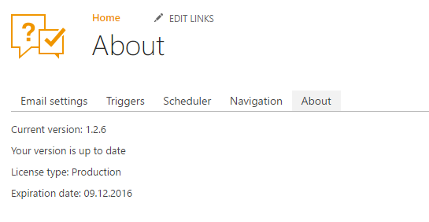

Upgrade manager¶
Upgrade manager allows you to install updates on your HelpDesk. Also it provides information about HelpDesk version and license.
Navigate to settings using the icon in the navbar:

Then click on “About” tab. You will see the interface of upgrade manager.
Note
If you don’t see “About” tab that means you are using HelpDesk version 1.0.0. You should manually navigate to URL <Site with HelpDesk>/HD/Settings/About.aspx.

On the picture above you can see that HelpDesk has version 1.2.6 and at the moment this version is up to date. Also you can see that license type is “Production” and expiration date is 09.12.2016.
If version of your HelpDesk is not up to date and your account have “Manage Web” permissions then you will see the list of updates with full description of each update.

To install update you can click “Update” button.
Upgrade to version 1.2.6¶
This update can erase some of settings:
- Notificaitons will be disabled during update.
- New tickets and comments creation will not work during update.
- All modifications of triggers will be lost. You will need to configure triggers from scratch.
- New triggers, will not use workflows by default, but you will be able to configure them to use old workflows.
- All modifications of message templates will be lost. You will need to configure them from scratch.
- Field and list titles will be reset to default.
- Forms will be reset to default.
New features:
- Possibility to rollback forms.
- Individual signature for agent message.
- Localizable ticket statuses.
- New trigger engine with friendly and flexible interface.
- HelpDesk uninstall page.
- HelpDesk update page.
Manual steps¶
You need to perform some actions manually to complete update:
Downdload css file
plumsail.helpdesk.theme.css.Upload and publish “plumsail.helpdesk.theme.css” to following location
<Site Collection with HelpDesk Site>/Style Library/<your language folder>/Themable/Plumsail/HelpDesk.Note
If HelpDesk is installed on the sitehttps://helpdesk.sharepoint.com/sites/IT/HelpDesk/with English as default languagethen you should upload and publish file tohttps://helpdesk.sharepoint.com/sites/IT/Style Library/en-us/Themable/Plumsail/HelpDesk.Go to site settings and click “Change the look”.
Reapply your current look.